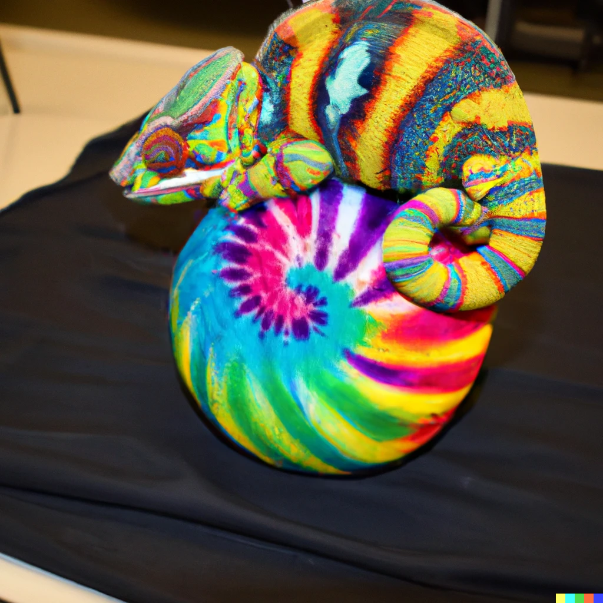

That chameleon won't ever change
In my dream, my Dad and I were fascinated with this Chameleon. We thought it was so cool this animal could change colors just by touching something.
We wanted to test the limits its ability, so we found the most colorful thing in the room, a spiral tie dye ball. The ones about the size of an old school dodgeball, but much lighter and not as rubbery and thick.
We moved the Chameleon on top of this ball, and it starts flashing all of these different colors. I'm smiling as I watch. I think this is really cool. But as I look across the table, my Dad is growing extremely upset by it.
A few seconds later he yells out with fury, "Turn pink!" Frantically the animal's colors begin changing in a seemingly unnatural way. It looks like it is trying to force itself to become pink out of guilt, but it can only manage a few pink spots here and there.
My Dad yells again, but with a bit more rage, "Turn pink!" This time he aggressively smacks the Chameleon directly over his body and head. The poor Chameleon looks so ashamed as he keeps flashing colors but only with occasional pink patches.
To me the problem is obvious. On the ball there is only a small area of pink right where the spiral begins. He doesn't have enough pink to lay on in order to fully become that color.
The Chameleon can only create using his inputs. He doesn't get to choose.
Still asleep, I thought to myself, "This is a great metaphor. I should write about it."
2022-12-7 